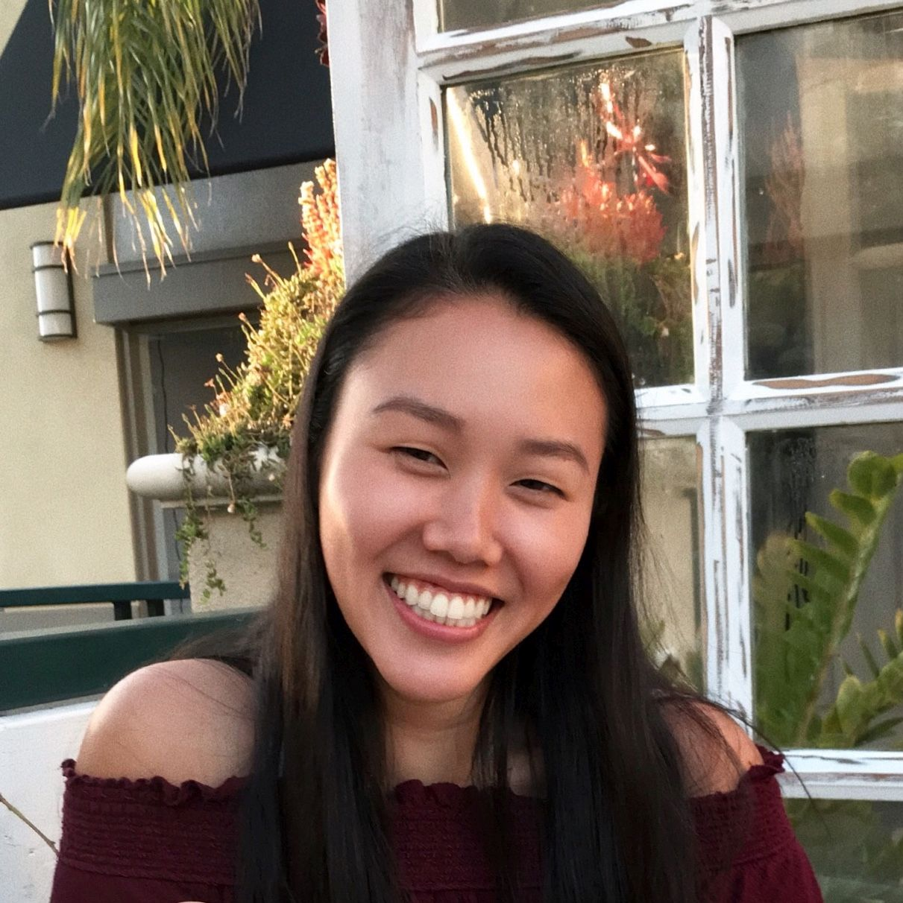

Staff
Instructors¶
|
Fahad Kamran (bio) Fahad has been involved with Data 8 for about 3 years and is excited to meet you all this summer!
fhdkmrn@berkeley.edu
OH: Mon 2pm-3pm, Wed 10:30am-11:30am in 416 Evans
|
 Vinitra Swamy (bio) Vinitra graduated from UC Berkeley with an M.S. in EECS and B.A. in Computer Science. Her research is in data science, specifically focused on AI and ML for large scale computing education. She is very excited to meet you all this summer! During her 3 years at Berkeley, Vinitra has been a 4 time GSI for Data 8.
vinitra@berkeley.edu
OH: Mon 10:30am-11:30am, Wed 2pm-3pm in 416 Evans
|
Teaching Assistants (uGSIs)¶
 Claire Zhang (bio) Claire is a third year studying English. This is her second semester TA-ing for Data 8 and her third semester on staff. She's really excited to get to know everyone, and hopes you'll enjoy the class as much as she did! Outside of teaching, Claire loves playing taiko and drawing.
clairezhang@berkeley.edu
Lab: Mon, Wed 11am-1pm in Cory 105, Mon, Wed 1pm-3pm in Cory 105
OH: Fri 1pm-4pm
|
 Harikaran Subbaraj (Hari) (bio) Hari is a 3rd year EECS student who is really excited to teach Data8 again! He is a huge Warriors fan and an avid comic reader. In his free time, Hari enjoys reading (high fantasy and science fiction), debating with strangers on reddit, and taking long naps.
hsubbaraj@berkeley.edu
Lab: Mon, Wed 1pm-3pm in Evans 458, Mon, Wed 3pm-5pm in 458 Evans
OH: Tu 12pm-2pm, Thu 1pm-2pm
|
 Howard Ki (bio) Howard is a third year CS major from South Florida. He really likes listening to musicals, eating Indian food, and hugging beautiful dogs. This will be his third semester as a part of Data 8 course staff, and he is looking forward to meeting all of you this semester!
howardki888@berkeley.edu
Lab: Mon, Wed 11am-1pm in Evans B6, Mon, Wed 1pm-3pm in Evans B6
OH: Tu 2pm-4pm, Thu 12pm-1pm
|
 Rohan Narain (bio) Rohan is a rising 3rd year studying statistics and data science. He's interested in a variety of applications of statistics from economics to sports analytics. He is a passionate baseball fan, and he can talk all day about the Giants (and the Warriors too)! He is very passionate about statistics, so feel free to ask him questions about the statistics community at Cal!
narain.rohan@berkeley.edu
Lab: Mon, Wed 3pm-5pm in Evans B6, Mon, Wed 5pm-7pm in 105 Cory
OH: Thu 2pm-4pm, Fri 12pm-1pm
|
 Ryan Roggenkemper (bio) Ryan is an almost-3rd year CogSci & CS major from Los Gatos, CA. He enjoys cooking (because it usually leads to eating things, which is pretty great), music, and playing a sport/game called jugger. He's also a bit too good at procrastinating (please don't follow his example).
rroggenkemper@berkeley.edu
Lab: Mon, Wed 11am-1pm in Evans 458, Mon, Wed 3pm-5pm in Cory 105
OH: Tu 3pm-5pm, Thu 3pm-4pm
|
Tutors¶
 Aidan De Angelis (bio) Aidan is a third year from Davis, California studying Computer Science. He came to Cal to study gastroenterology and mind-gut interactions, but fell in love with CS and Data Science after taking Data8 his first semester. He likes hiking, paintball, and reading science fiction. He loves Data8 and hopes will do too!
aidandeangelis@berkeley.edu
OH: Tu 1pm-2pm, Fri 1pm-2pm
|
 Iman Eslami (bio) Iman is a rising junior studying Economics and Data Science. He hails from the Mission Viejo, CA in the OC but likes to tell people he's from Chicago since he was born there and it sounds cooler. Iman enjoys both playing and watching basketball and soccer and fancies an active lifestyle. He also likes to read about politics, go on Wikepedia adventures, and plan his future travel destinations. He has a wide range of academic interests and is willing to learn about almost anything.
imaneslami@berkeley.edu
OH: Tu 2pm-4pm
|
 Lillian Louie (bio) Lillian is a sophomore who enjoys watching asian dramas (Korean, Chinese, Japanese, etc.). She loves milk tea and is always down for a boba run. It’s her first time as a course staff and she is excited to make a lot of new friends!
lillianlouie@berkeley.edu
OH: Tu 4pm-5pm, Thu 2pm-3pm
|
 Sabrina Liu (bio) Sabrina is a fourth year studying Economics, Statistics, and Music. She loves everything about her hometown of Pittsburgh, especially the sports teams in it. You'll never hear her call carbonated beverages anything other than pop. The only time 'soda' is acceptable is when referencing Soda Hall.
liusabrina@berkeley.edu
OH: Fri 2pm-4pm
|
 Sathvik Nair (bio) Sathvik is a rising junior from San Jose, studying some changing combination of Computer Science, Cognitive Science, and Data Science. He is interested in applications of data science in the social sciences, and researches computational cognitive science. Outside of school, he likes to read, cook, play different instruments, and drink copious amounts of tea. He was a tutor last semester as well and is excited to be on staff this summer!
sathviknair@berkeley.edu
OH: Thu 12pm-2pm
|
Shoumik Jamil (bio) Shoumik is a senior studying Data Science and Cognitive Science. He loves watching sports and reading FiveThirtyEight in his spare time. Data 8 is his favorite course and he looks forward to sharing his enthusiasm for Data Science with everyone!
sjamil@berkeley.edu
OH: Tu 12pm-1pm, Fri 12pm-1pm
|
Lab Assistants¶
|
Alvin Yu (bio) Alvin is a rising sophomore intending to major in data science with interests in education, political science, and economics! He enjoys running, watching and playing sports, dancing, eating delicious food, and entertainment (he has spent much of his summer binging Survivor, Black Mirror, 3%, and numerous rom-coms). He's excited to lab assist for Data 8 to help students from all majors and backgrounds understand and appreciate the material and foster a good time in lab!
alvinyu27@berkeley.edu
Lab: Mon, Wed 1pm-3pm in Cory 105 (GSI: Claire)
|
Amy Zhang (bio) Amy is a second year student studying Economics and Data Science. On campus, she is involved with Valley Consulting Group, Project SMILE, and the DeCal Board. In her free time, she likes to cook, travel, and try out new foods!
amyzhang99@berkeley.edu
Lab: Mon, Wed 3pm-5pm in Cory 105 (GSI: Rohan)
|
Ananya Krishnaswamy (bio) Ananya is a junior studying Computer Science. In her spare time, she enjoys going on hikes, playing pool, and drinking copious amounts of tea. This is Ananya's first time on course staff, and she is excited to get to know everyone!
ananyaks@berkeley.edu
Lab: Mon, Wed 11am-1pm in Evans 458 (GSI: Ryan)
|
Andrew Rall (bio) Andrew is a rising Junior studying statistics and computer science. He grew up in Wisconsin (Go Pack Go) but has also spent time living in the Boston area (Tom Brady is the GOAT). Evidently he enjoys watching football, but he also likes to run, bike, and swim.
andrewr0498@berkeley.edu
Lab: Mon, Wed 11am-1pm in Evans 458 (GSI: Ryan)
|
|
Andrew Tunggal (bio) Andrew is a rising senior from the Bay Area studying Data Science. You will often find him listening to or playing music (often to procrastinate) or playing sports with friends. He also has a knack for falling asleep in various places/circumstances (but he will make sure not to do so during labs).
artunggal10@berkeley.edu
Lab: Mon, Wed 3pm-5pm in Evans 458 (GSI: Hari)
|
Archer Olson (bio) Archer is an incoming sophomore planning to major in business and data science. She really enjoyed Data 8 and looks forward to continuing to be involved as a lab assistant. She plays basketball at Cal and likes to hike, play beach volleyball, and bake in her free time.
archerolson@berkeley.edu
Lab: Mon, Wed 3pm-5pm in Cory 105 (GSI: Rohan)
|
Ashley Quiterio (bio) Ashley is a sophomore interested in Data Science, because it can be incorporated into countless fields. In her free time, she enjoys exploring regional parks across the Bay.
ashleyquiterio@berkeley.edu
Lab: Mon, Wed 3pm-5pm in Evans 458 (GSI: Hari)
|
Ava Wu (bio) Ava is a rising third-year from SoCal, studying Molecular & Cell Biology and French. She loves learning languages, invading bookstores, and listening to musicals. She would consider her proudest accomplishment to be never having cracked her phone screen.
ava.wu@berkeley.edu
Lab: Mon, Wed 1pm-3pm in Evans 458 (GSI: Hari)
|
|
Cameron Malloy (bio) Hi, I'm Cameron! I'm an Applied Math major (2+2=4-1=3). I enjoy photography and messing with them through computer programs. I also like predicting things with super cool and intriguing algorithms or with a crystal ball. I'm also extremely against high costs of avocado toast.
cmalloy@berkeley.edu
Lab: Mon, Wed 11am-1pm in Cory 105 (GSI: Claire)
|
Christine Kim (bio) Christine is an uprising junior from the Bay Area, majoring in Molecular and Cell Biology. She hopes to have a career in pre-health because she wants to inspire and help other people. In her free time, Christine loves traveling, staying active, and ice cream/frozen yogurt!
christinekkim@berkeley.edu
Lab: Mon, Wed 1pm-3pm in Evans 458 (GSI: Hari)
|
Daniel Lujan (bio) Daniel is a rising sophomore studying computer science and data science. He enjoys playing the viola and cooking Italian foods.
dnlujan@berkeley.edu
Lab: Mon, Wed 11am-1pm in Evans B6 (GSI: Howard)
|
David Yi (bio) David is a coming second year studying Energy Engineering, though he is becoming increasingly drawn to Computer Science and Data Science. He believes that Data 8 is the greatest course ever invented, and is super excited to join the team.
davidyi624@berkeley.edu
Lab: Mon, Wed 3pm-5pm in Cory 105 (GSI: Ryan)
|
|
Dev Navani
devnavani@berkeley.edu
Lab: Mon, Wed 1pm-3pm in Evans B6 (GSI: Howard)
|
Emily Hsiao
ehsiao13@berkeley.edu
Lab: Mon, Wed 1pm-3pm in Evans B6 (GSI: Howard)
|
Erika Mack
erika.n.mack@berkeley.edu
Lab: Mon, Wed 1pm-3pm in Evans B6 (GSI: Howard)
|
Grace Wang (bio) Grace is a second year integrative biology major planning on going for a double major in public health. When she's not doing lab, (whether it'd be for physics, data 8, biology, or chemistry) she's busy studying outside in the sunshine or swimming laps at the pool. In her free time, she loves jamming along to Disney movie soundtracks, baking, drinking chai lattes, and flyering people on Sproul.
grace_wang@berkeley.edu
Lab: Mon, Wed 3pm-5pm in Evans B6 (GSI: Rohan)
|
|

Heather Zhang (bio) Heather is a public health and economics major from San Diego. In her free time, she likes solving puzzles, eating, napping, and going to the beach. Her favorite foods are eggs, potatoes, and golden kiwis.
heatherzhang@berkeley.edu
Lab: Mon, Wed 11am-1pm in Evans 458 (GSI: Ryan)
|
Joo Kim (bio) Joo is a second year majoring in applied mathematics. She is also interested in minoring data science. During her free time, she enjoys hiking, playing tennis, and listening to music.
jh04023@berkeley.edu
Lab: Mon, Wed 3pm-5pm in Evans 458 (GSI: Hari)
|
Keilyn Yuzuki (bio) Keilyn is a rising sophomore from Palos Verdes, CA interested in cognitive science and data science. She enjoys softball, learning to play the ukulele, good food, and cute dogs. She's excited to work with you all this summer!
keilyn.yuzuki@berkeley.edu
Lab: Mon, Wed 1pm-3pm in Evans 458 (GSI: Hari)
|
Kseniya Usovich (bio) Kseniya is a transfer student majoring in Cognitive Science. Kseniya likes studying languages and rewatching her old favorites (which include Friends and Grey's Anatomy). If she is not on campus studying, you will most likely find her exploring one of the 59 US National Parks or simply road tripping through some beautiful places in California and neighboring states.
k_usovich@berkeley.edu
Lab: Mon, Wed 3pm-5pm in Evans B6 (GSI: Rohan)
|
|
Lavanya Vijayan (bio) Lavanya is a rising junior studying data science, cognitive science, and computer science. She has lived in Memphis, Redwood City, and Fremont. In addition to teaching, she enjoys singing Indian classical carnatic, meditating, eating, and watching Netflix. She took Data 8 last semester, which became one of her favorite classes at Cal, and sh's looking forward to a new memorable semester of Data 8!
lvijayan1@berkeley.edu
Lab: Mon, Wed 1pm-3pm in Cory 105 (GSI: Claire)
|
Linda Ly (bio) Linda recently graduated with a major in public health. She is interested in data science and applying it to healthcare and research. In her free time, she likes playing with her bearded dragon and playing tennis.
lindaly3635@berkeley.edu
Lab: Mon, Wed 11am-1pm in Evans B6 (GSI: Howard)
|
Michelle Fang (bio) Michelle is a rising junior who enjoys learning languages, good music, and good food. She also spends a lot of time on Youtube (for better or for worse). She's excited to meet everyone and hopes you'll enjoy Data8 as much as she did.
mfang8@berkeley.edu
Lab: Mon, Wed 3pm-5pm in Cory 105 (GSI: Ryan)
|
 Olivia Lewke (bio) Olivia is a third year English and intended Data Science double major from Southern California. She also works in the SLC as a writing tutor, and she loves learning from the people around her. Her hobbies include reading, trying to find time for sleep, and of course, debugging her code.
olivialewke@berkeley.edu
Lab: Mon, Wed 1pm-3pm in Cory 105 (GSI: Claire)
|
|
Sam Wu (bio) Sam is a sophomore studying Computer Science and Data Science! He is from Vancouver, Canada, and he loves to learn about the different cultures of the world! Hit him up if you like anime, food, or traveling! He is also fluent in three languages: English, Mandarin, French (not as fluent as before).
samwu101@berkeley.edu
Lab: Mon, Wed 11am-1pm in Cory 105 (GSI: Claire)
|
Samantha Sheldon
samsheldon@berkeley.edu
Lab: Mon, Wed 3pm-5pm in Cory 105 (GSI: Rohan)
|
Stella Park
spark1208@berkeley.edu
Lab: Mon, Wed 3pm-5pm in Evans B6 (GSI: Rohan)
|
Tamara Vilaythong (bio) Tamara is a rising sophomore and an intended Computer Science/Data Science major. She is from San Diego so feel free to ask her about her love of tacos. She loved taking Data 8 and is excited to help out in labs!
tvilayth@berkeley.edu
Lab: Mon, Wed 11am-1pm in Evans B6 (GSI: Howard)
|
 Weiwen Cui
weiwen.v.cui@berkeley.edu
Lab: Mon, Wed 11am-1pm in Cory 105 (GSI: Claire)
|
Yao Xiao (bio) Yao is a rising sophomore studying Economics and Data Science. In his spare time, he likes to stay home binge watching TV series, movies, YouTube videos and basically anything fun. It's his first time helping in labs, and he will try his best!
xiao.yao@berkeley.edu
Lab: Mon, Wed 3pm-5pm in Cory 105 (GSI: Rohan)
|
Youmna Rabie (bio) Youmna is an incoming junior majoring in Economics and Data Science. Data 8 has been her favourite class at Berkeley so far, and she couldn't be more excited to be a lab assistant!
youmnarabie@berkeley.edu
Lab: Mon, Wed 3pm-5pm in Cory 105 (GSI: Ryan)
|